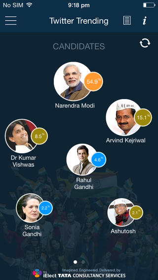

Problem:
To help voters decide the right candidate for the general elections
Method:
Android Development, Twitter API, Data Analysis
Solution:
India has a large amount of smartphone users and almost 100 million first-time voters in the general elections 2014. This app will be a new and engaging way for them to participate through the entire process with its gamified and interactive features.
iElect app is a completely new way to observe, analyze and participate in the social conversations around the world's largest general elections. The users of iElect app have access to fascinating insights and trends on a real-time basis.
The app harnesses the power of social media, big data, analytics and mobility to make sense of what seems to be a complex web of conversations.
Some of it's features are:
- Analysis of more than 3 million tweets
- Gauging people’s sentiment to all top politicians, parties and issues
- Analysing poll issues people associate with politicians
- Understanding where parties and candidates are making an impact
- Captures association of top politicians with other celebrities
- Highlights viral tweets that are making noise
- Captures what people are talking about and what they are not talking about
- Allows users to predict and project their own calls on the Parliament Elections 2014, and share on social media platforms